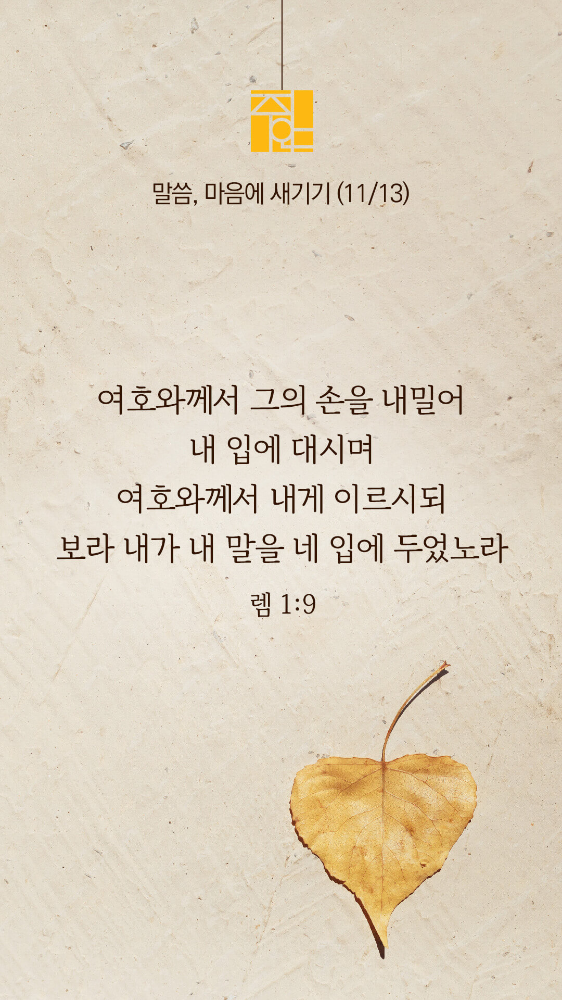

기도실 안내
2022년 11월 13일 (주일)
- 온라인 기도실은 온 회중이 함께 주님 앞으로 나아가는 자리입니다.
- 30분 정도 여유를 가지고 하시b기 바랍니다.
- 말s씀과 묵상, 찬양과 기도로 나아갑니다.
- 배경 음악이 나올 수 있습니다 볼륨을 조절해주세요.
준비가 되셨으면 아래의 버튼을 눌러주세요.
할렐루야
내 영혼아 여호와를 찬양하라
시 146:1
- 먼저 찬양의 가사를 천천히 읽어 봅시다.
예수의 길
안개 속에서 주님을 보네
아무도 없을 것 같던 그곳에서
손 내미셔서 나를 붙드네
길 잃고 쓰러져가던 그곳에서
주 말씀하시네 내 손 잡으라고
내가 곧 길이요 진리 생명이니
나 그 길을 보네 주 예비하신 곳
다른 길로 돌아서지 않으리
할렐루야
내 영혼아 여호와를 찬양하라
시 146:1
- 먼저 찬양의 가사를 천천히 읽어 봅시다.
예수의 길 그 좁은 길
나는 걷네 주 손잡고
그 무엇도 두렵지 않네
주님 주신 약속 내게 있으니
세상의 길 그 험한 길
승리하네 성령으로
그 무엇도 바라지 않네
저 하늘에 내 소망 있으니
할렐루야
내 영혼아 여호와를 찬양하라
시 146:1
예수의 길 by brimover
위의 찬양이 끝나면 말씀읽기를 눌러주시면 됩니다.
주의 말씀은 내 발에 등이요
내 길에 빛이니이다 (시119:105)
오늘의 말씀입니다.
음악 소리가 크면 조절하시기 바랍니다.

마음의 묵상
렘 1:9
“여호와께서 그의 손을 내밀어 내 입에 대시며 여호와께서 내게 이르시되 보라 내가 내 말을 네 입에 두었노라”
1. 여호와께서 예레미야의 입에 무엇을 두었다고 말씀하나요?
2. 당신이 평소 사용하는 말은 사람을 살리는 말, 예수님의 향기가 나는 말인가요?
3. “주님, 저의 입술을 주장하여 주시어 사랑의 말, 긍정적인 말이 흘러나오게 하소서” 간절히 기도합시다.
말에 많은 힘이 있습니다.
회개, 삶의 방향을 바꾸는 결정
하나님의 긍휼과 용서하심을 의지합니다.
“주 우리 하나님께는
긍휼과 용서하심이 있사오니 이는
우리가 주께 패역하였음이오며”
- 다니엘 9:9 -
3분 정도 회개하며 주님 앞에 나아갑니다
사슴이 시냇물을 찾기에 갈급함 같이
시 42:1
- 다음의 말씀을 소리 내어 읽습니다.
[다니엘 9장 3-6절]
3 내가 금식하며 베옷을 입고 재를 덮어쓰고 주 하나님께 기도하며 간구하기를 결심하고
4 내 하나님 여호와께 기도하며 자복하여 이르기를 크시고 두려워할 주 하나님, 주를 사랑하고 주의 계명을 지키는 자를 위하여 언약을 지키시고 그에게 인자를 베푸시는 이시여
사슴이 시냇물을 찾기에 갈급함 같이
시 42:1
- 다음의 말씀을 소리 내어 읽습니다.
[다니엘 9장 3-6절]
5 우리는 이미 범죄하여 패역하며 행악하며 반역하여 주의 법도와 규례를 떠났사오며
6 우리가 또 주의 종 선지자들이 주의 이름으로 우리의 왕들과 우리의 고관과 조상들과 온 국민에게 말씀한 것을 듣지 아니하였나이다
하나님 나라
1. 하나님의 나라가 속히 이 땅에 임하게 하소서
하나님 아버지,
열방의 분쟁들 가운데 개입하여 주셔서, 하나님의 평강이 열방 가운데 임하게 하소서. 전쟁과 폭력으로 고통 받고 있는 고아와 과부와 같은 연약한 자들을 보호하여 주시고, 이들을 위하여 모든 교회가 기도하며, 하나님의 사랑과 위로를 전하게 하소서.
간절한 마음으로 3분 정도 기도합시다
남과 북
2. 남북한이 속히 복음으로 통일되게 하소서
하나님 아버지,
한반도의 평안과 통일, 복음 전파를 위하여 중보하는 기도의 용사들이 전 세계에서 일어나게 하소서. 북한의 지하교회 성도들에게 성령의 충만함을 더하여 주셔서 담대한 믿음과 구원의 확신을 더하여 주소서.
간절한 마음으로 3분 정도 기도합시다
대한민국
3. 우리나라가 하나님을 경외하는 나라가 되게 하소서
하나님 아버지,
우리나라 곳곳에 남아 있는 모든 부정과 부패와 거짓과 태만이 사라지게 하시고, 정직과 거룩이 우리 나라의 모든 영역마다 충만하게 하소서. 수능을 치르는 수험생들을 지켜주시고, 그들 모두의 인생길을 주님께서 인도하여주소서.
간절한 마음으로 3분 정도 기도합시다
한국 교회
4. 한국교회가 성령으로 새롭게 부흥되게 하소서
하나님 아버지,
한국 교회가 하나님을 경외하는 다음 세대와 지도자들을 길러내는 교회가 되게 하소서. 수험생을 비롯한 모든 다음세대에게 비전과 소망을 제시하는 교회가 되게 하소서. 한국 교회의 성도들이 슬픔과 절망에 빠진 이들을 위로하고 함께 울어주는 성도가 되게 하소서.
간절한 마음으로 3분 정도 기도합시다
주안교회
5. 주안교회가 선교적 삶으로 복음의 빛을 비추는 교회가 되게 하소서
하늘의 하나님,
제가 이 모든 문제의 원인입니다. 제가 한국교회를 타락시키고, 분열시키고, 맘몬을 섬기도록 만든 자입니다. 제가 민족의 교만과 타락과 방종을 외면한 죄인입니다. 제가 세상에서 방황하는 청년들과 우리의 자녀들을 제대로 인도하지 않고 방관한 죄인입니다. 우리를 불쌍히 여기사 용서하여 주시고, 우리 교회와 민족을 다시 회복시켜 주옵소서.
간절한 마음으로 3분 정도 기도합시다
감사의 기도
- 오늘 기도를 인도하신 주님께 감사를 올려드립니다.
- 아래의 구절을 읽고 주님께 감사의 마음을 올려드립시다.
“그는 시냇가에 심은 나무가
철을 따라 열매를 맺으며
그 잎사귀가 마르지 아니함 같으니
그가 하는 모든 일이 다 형통하리로다”
- 시편 1장 3절 -
고요한 가운데 잠시 침묵하시기 바랍니다.
파송, 세상을 향하여
- 오늘의 온라인 기도를 마쳤습니다.
기도를 들으신 주님께서 평안히 가라 하십니다.
주님께서 우리와 함께 하시니 두려울 것이 없습니다.
새벽을 깨우며
- 새벽기도회 안내입니다.